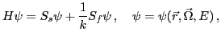
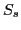
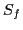

In a variety of nuclear reactor design calculations, one needs to evaluate a critical parameter of a reactor and the corresponding particle distribution function. To perform computations for this important class of reactor physics problems, it is necessary to solve the neutron transport equation and determine the largest eigenvalue with the associated eigenfunction. The transport equation is a detailed conservation relation for particles in the phase space defined by the spatial, angular and energy variables. It is a linear integro-differential equation that can be presented in the following form:

Here the operator

and
are integral operators that describe scattering and fission processes.To solve eignvalue transport problems, we use nonlinear multilevel iterative methods. The basic idea behind these methods is to effectively reduce the dimensionality of the problem by averaging the transport equation over angular and energy variables. We apply two successive projection operations to the transport equation with no approximations involved. This procedure leads to a multilevel system of equations in spaces with lower dimensionality than the original space to which the transport solution belongs. The multilevel system of equations is closed by means of exact closure relations using linear-fractional factors. The solution of transport equation provides all necessary data that enable one to define the transport problems of the reduced dimensionality.
In the presented method, the eigenvalue is evaluated in the subspace of the lowest dimensionality where solution depends only on the spatial variable. Note that this is an exact projected solution subspace, because all closure relations defined to derive the multilevel equations are exact. The resulting low-order transport problem is treated as the generalized eigenvalue problem. This low-order transport problem reproduces essential features of neutron transport physics. As a result, one gets a good estimation of the eigenvalue and associated eigenfunction. This leads to acceleration of the multigroup transport iterations.
We apply this methodology to the nonlinear diffusion acceleration (NDA) method that is an efficient and flexible transport iterative scheme for solving reactor-physics problems. In this talk we present a fast iterative algorithm for solving multigroup neutron transport eigenvalue problems in 1D slab geometry. Numerical results that illustrate performance of the algorithm are demonstrated.